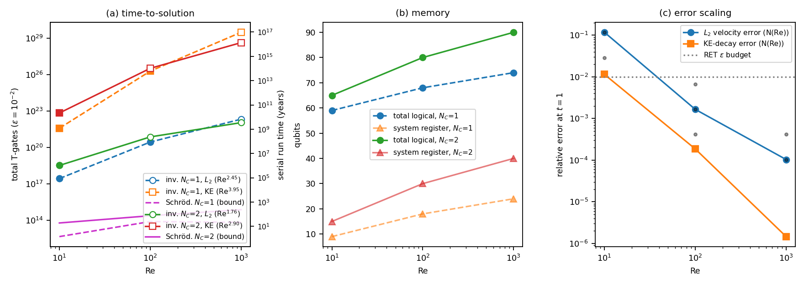
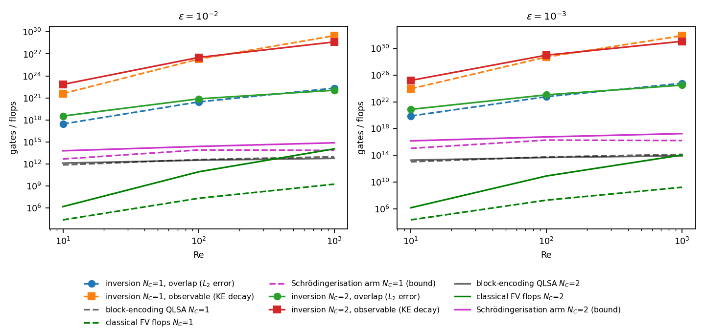
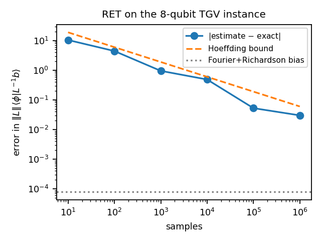

Code and data behind the Phase 1 concept proposal Explicit-constant resource estimates for the 2D convecting Taylor–Green vortex with a one-ancilla, block-encoding-free quantum solver (2026 Global Quantum + AI Challenge, Airbus problem statement “Quantum Solvers: Enhancing Predictive Aerodynamic Modeling Capabilities”).
Repository ↗ RET paper — arXiv:2608.13862 ↗ summary.json MIT licence
results/summary.json. The numbers and tables on this page are read from it at
load time; if you are opening this file directly from disk, serve the directory over HTTP instead
(python -m http.server).
The solver is a Carleman-linearised, Crank–Nicolson finite-volume discretisation of the 2D convecting Taylor–Green vortex, assembled into one space-time linear system and solved with Randomized Extrapolation Trotterization (RET) as the matrix-inverse primitive. Every constant in the resource model — condition number, Trotter-term norms, nested-commutator norms — is computed on the assembled matrices rather than bounded analytically.



One row per (NC, Re, ε, task) point. Task 1 estimates an overlap and costs (c‖b‖1)2 in samples; Task 2 estimates an observable (kinetic-energy decay) and costs the fourth power. Rows marked extrap use the N-extrapolated spectral constants rather than directly assembled ones.
| NC | Re | N | Nt | ε | task | κ | Λ | α₃ | nsys | logical qubits | T-gates | samples | serial (yr) | Schrö. T-gates |
|---|
Gate model:
Power-law fits of the spectral constants in the grid size N, at fixed NC and Re
(exponent b in A·Nb), from fit_and_plot.py.
| case | κ | Λ | α₂ | α₃ | ΛC | N grid |
|---|
| case | exponent in Re | prefactor |
|---|
Classical emulation of the same scheme against the analytic decaying vortex, from
error_scaling.py. Grid rule with
η = ; rows at the rule are marked
on rule.
| Re | N | Nt | L₂ error at t=1 | KE error at t=1 | decay rate (fit) | decay rate (exact) |
|---|
Relative L₂ error against a reference solve when the initial vortex is perturbed, at both Carleman orders.
| Re | N | perturbation | NC=1 rel. L₂ | NC=2 rel. L₂ | KE ratio (NC=2) | KE ratio (reference) |
|---|
A full RET run on the smallest instance — CKS Fourier series for 1/x, Richardson extrapolation schedule,
and Hadamard-test sampling — from demo_ret.py.
| samples | estimate (real) | estimate (imag) | error |
|---|
# the JSON in results/ is committed, so the figures and every number # in the proposal reproduce without re-running the spectral sweeps pip install -r requirements.txt python tgv_operator.py # self-tests: adjoints, inverses, F2 = 0 on the exact mode python resources.py --N 4 8 --NC 1 2 --Re 10 100 python resources.py --N 16 32 64 --NC 1 --Re 10 100 1000 python resources.py --N 16 --NC 2 --Re 10 100 --no-order3 python error_scaling.py # L2 and kinetic-energy error vs the analytic solution python demo_ret.py # end-to-end RET run on the 8-qubit instance python fit_and_plot.py # -> figs/, and the LaTeX macros used in the proposal
The N = 64 sweeps take a few hours. richardson.py is vendored from the numerics of
arXiv:2608.13862 (github.com/arulrhikm/numerics) and
keeps its own copyright line in LICENSE-richardson.